3CX direttamente nel PC
EasyIsland si registra come telefono WebRTC del tuo interno: chiami, rispondi, trasferisci, segreteria con trascrizione, code e team in tempo reale.
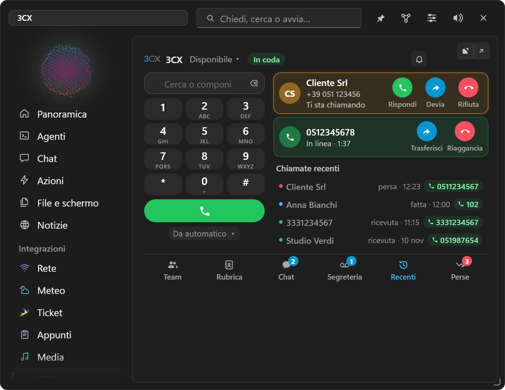
EasyIsland vive in cima allo schermo di Windows. Approvi Claude Code, Codex, opencode e Gemini CLI con un clic, affidi compiti interi e tieni un secondo cervello di clienti e progetti. Con il motore AI che scegli tu.
Gratis e open source (MIT) · Windows 10/11 · italiano o inglese · nessuna telemetria
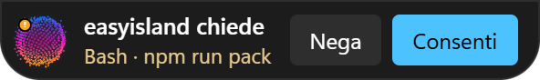
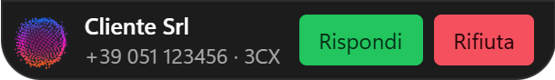
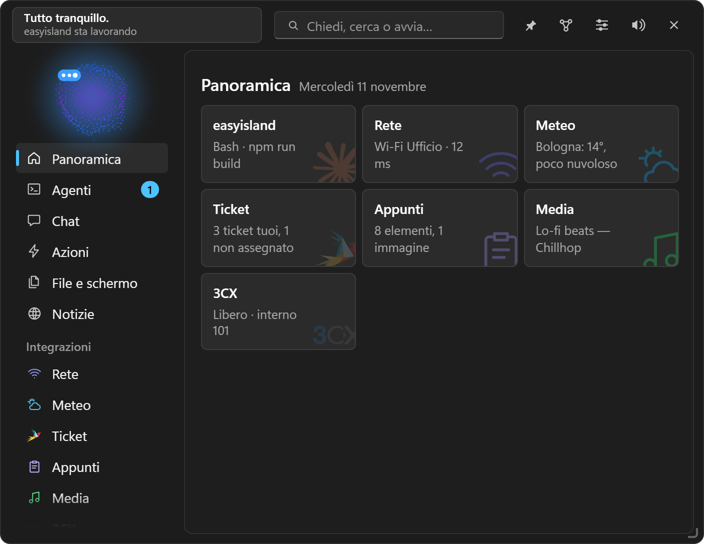
Le sessioni di programmazione diventano schede vive: avanzamento, passi e modifiche ai file in tempo reale. Quando un agente ha bisogno di te, la risposta è accanto al personaggio. Guarda in alto: l'isola ti ha appena chiesto una cosa.
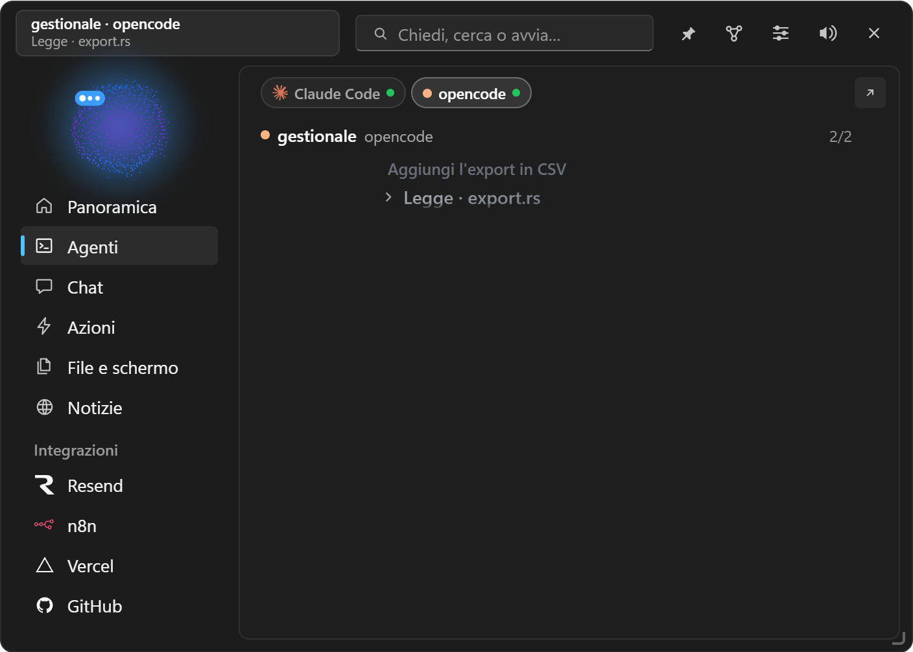
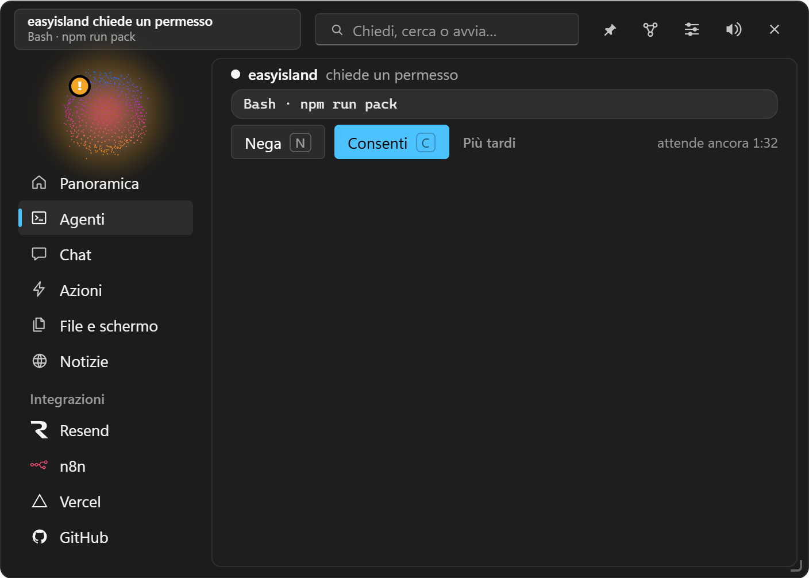
Dalla 1.0 EasyIsland è un agente personale: fa un piano, usa i tuoi strumenti, ti chiede solo quello che sai solo tu, e ricorda. La sua memoria è un secondo cervello da esplorare.
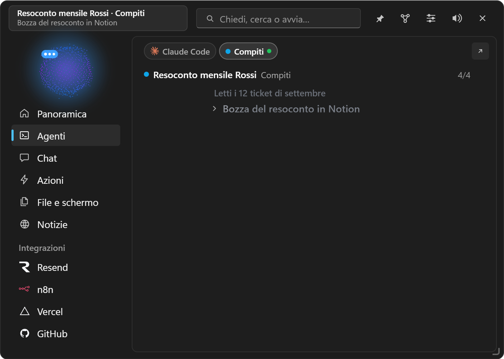


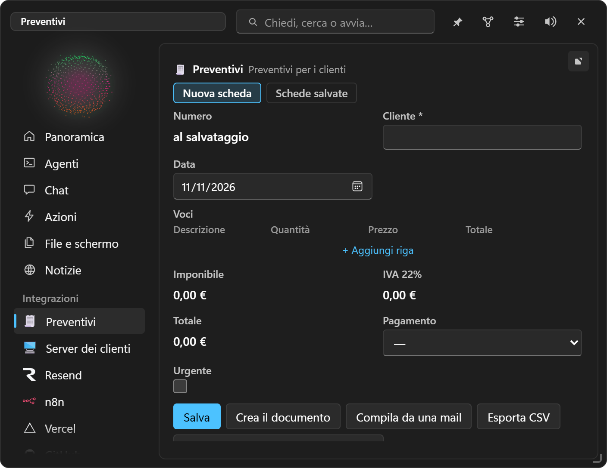

Il tuo abbonamento Claude senza chiave, una chiave API o un modello che gira sul tuo PC. La chat può usare il PC attraverso EasyIsland, con Consenti / Nega su tutto ciò che cambia qualcosa.
EasyIsland si registra come telefono WebRTC del tuo interno: chiami, rispondi, trasferisci, segreteria con trascrizione, code e team in tempo reale.

Selezioni del testo ovunque e le tue azioni compaiono accanto al mouse. Le riscritture mostrano prima/dopo e incollano solo dopo «Sostituisci».
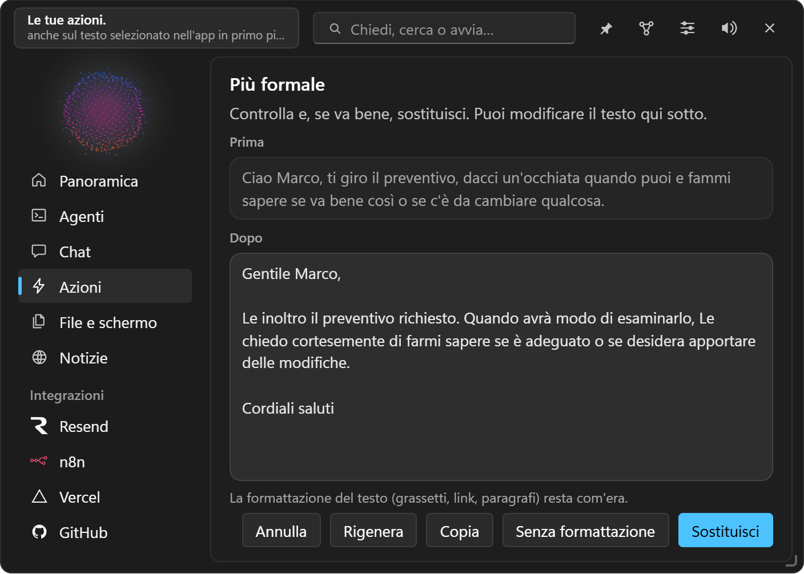
Integrazioni, azioni, programmi, memoria, ticket e contatti. Con Ctrl+Invio chiedi alla chat.
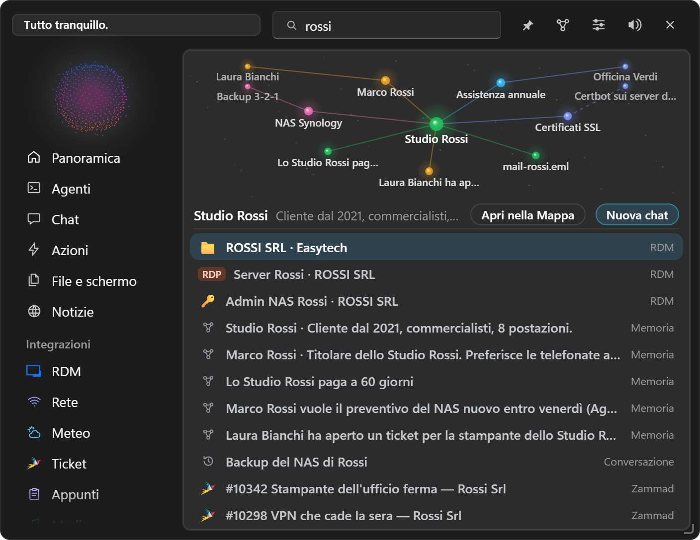
Zammad, Outlook, Teams, Notion, Telegram, WinRM e SSH, Remote Desktop Manager. Ne manca una? Chiedila alla chat e diventa un'integrazione personale.
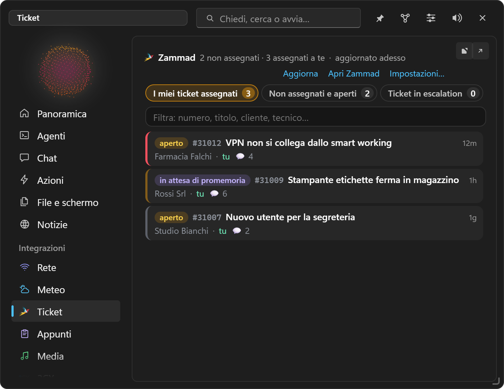
Automazioni scritte a parole nella chat, o suggerite dalle tue abitudini.
Ogni integrazione sta nel menu con il suo logo e un pallino quando ha novità. In più widget per siti, certificati, domini, server, calendari e API.
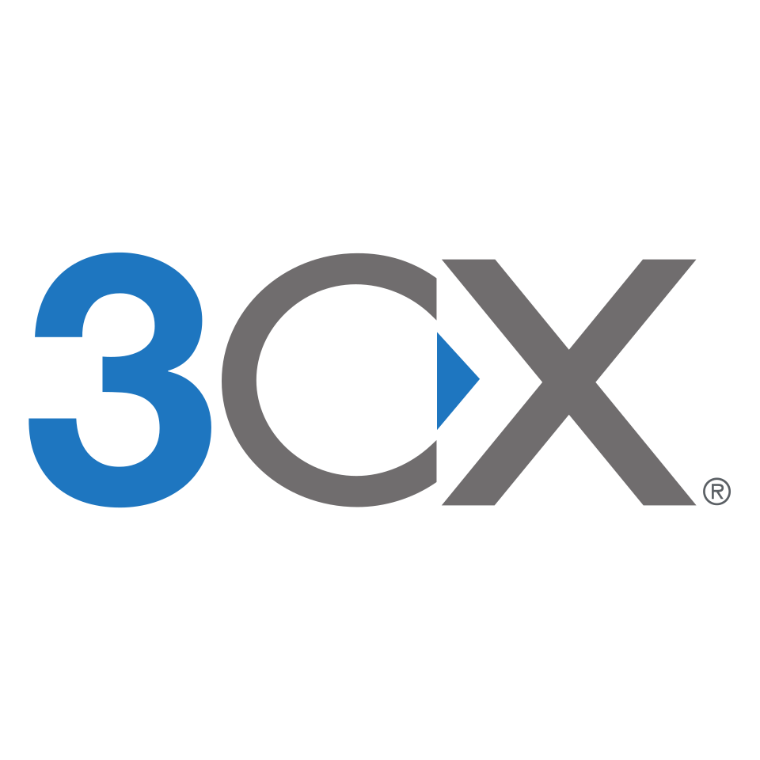
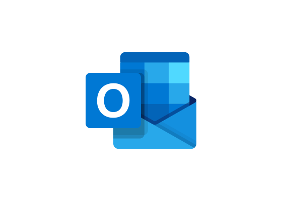
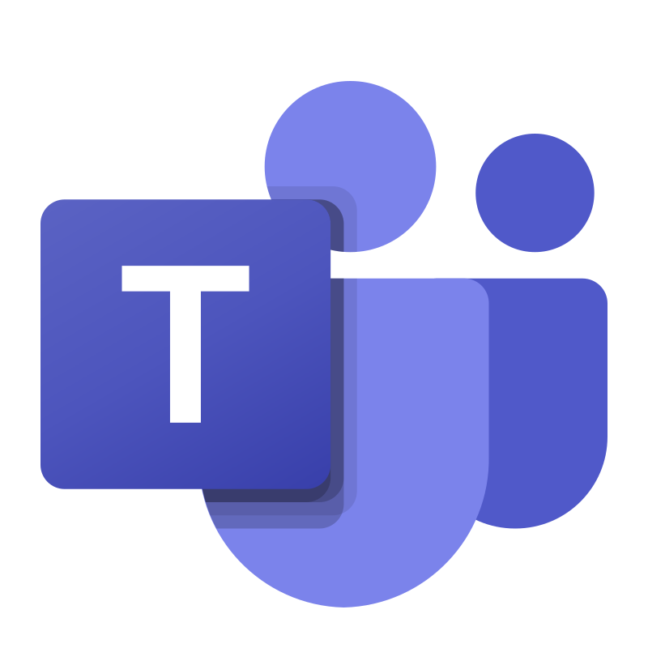

Undici personaggi disegnati nel codice, o il tuo logo al loro posto. Stile Windows 11 o Classico, chiaro o scuro. Con l'isola ritirata la CPU resta a ~0%.
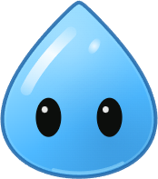
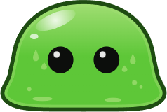
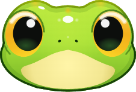
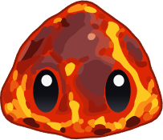
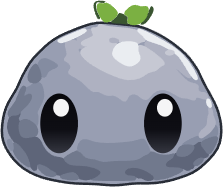
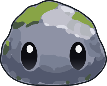
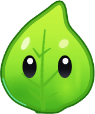
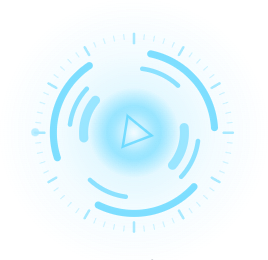
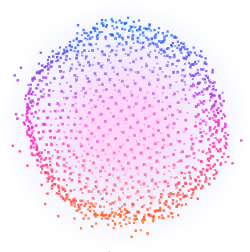
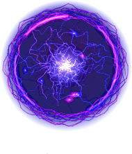
La rete serve solo per i servizi che configuri tu e per il controllo degli aggiornamenti, che puoi spegnere.
Chiavi e password stanno in Gestione credenziali di Windows. Mai su disco, mai in git.
Niente si installa da solo, e ogni aggiornamento ha la firma verificata.
Prendi EasyIsland-Windows-setup.exe dalle release. Solo per l'utente corrente, senza amministratore.
L'installer non è ancora firmato: SmartScreen mostra un avviso, clicca Ulteriori informazioni → Esegui comunque.
Icona nell'area di notifica → Impostazioni → Agenti → Installa, poi scegli il motore nella pagina Chat.
Novità 1.0.46: EasyIsland fa il lavoro al posto dell'IA, così la chat consuma molto meno.